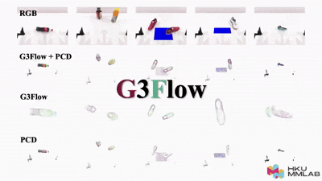
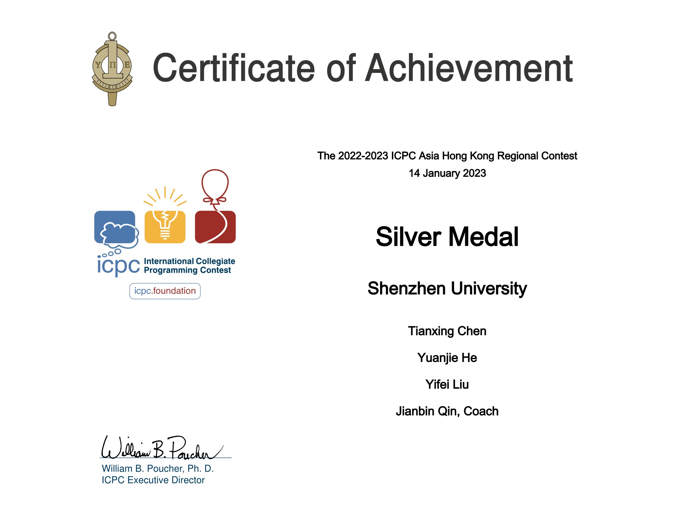
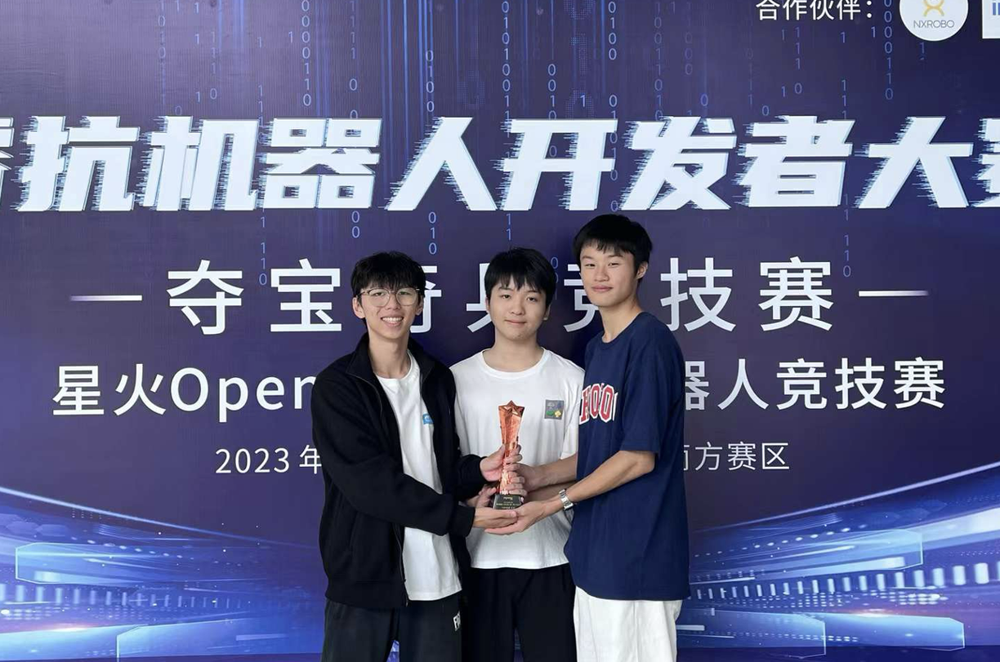

Tianxing CHEN (陈天行)
🎓 Year-1 PhD Student @ HKU-MMLab🤖 Embodied AI & Robotics Researcher🎙️ Co-Founder of Lumina Embodied AI Community
|


Biography
Hi! I am Tianxing Chen (Chinese name: 陈天行), a first-year Ph.D. student at MMLab@HKU (since Sep. 2025), supervised by Prof. Ping Luo and working closely with Dr. Yao Mu. My research focuses on Embodied AI, including robotic foundation models, generalizable manipulation policies (e.g., VLA, diffusion policy), and robot data synthesizers.
I have published multiple papers at top venues such as CVPR, RSS, and ACL. My work received the Best Paper Award at the ECCV 2024 MAAS Workshop, an Outstanding Poster Award at ChinaSI, and a CVPR Highlight recognition. Beyond research, I have been honored with the CCF Elite Collegiate Award (99 nationwide) and the "Excellent Star of SZU", the highest undergraduate honor at Shenzhen University (ranked 2/30,000). I also won a silver medal in the ACM-ICPC regional competition and was national runner-up in the RAICOM robotics developer competition.
I am the co-founder of Lumina Embodied AI Community, and have served as an organizer of the SIGGRAPH ASIA 2025 TriFusion Workshop, CVPR 2025 MEIS Workshop, the CVPR 2025 RoboTwin Dual-Arm Collaboration Challenge, and the Greater Bay Area Embodied AI Workshop. I am also a student committee member of the Autonomous Robotic Technology Seminar (ARTS). In addition, I share my thoughts on research and technology as a blogger and vlogger, with over 15k followers on Rednote 🎒@TianxingChen (陈天行).
中文版个人简介
Hi！我是陈天行 (English name: Tianxing Chen)，现在是香港大学MMLab@HKU的一年级博士生（始于2025年9月），师从罗平教授，并且与穆尧博士紧密合作。我的研究方向是具身智能，包括机器人通用操作策略、数据合成器、视觉基座模型等。
我在CVPR、RSS、ACL等学术顶会发表多篇论文，在ECCV 2024 MAAS Workshop上获得最佳论文奖，在ChinaSI中获得Outstanding Poster，获得CVPR Highlight等。我曾经获得CCF优秀大学生（全国年度99人）、荔园卓越之星（深圳大学本科生最高荣誉）等荣誉。竞赛上在ACM-ICPC国际大学生程序设计竞赛中获得银牌，在RAICOM机器人开发者大赛中获得赛道全国亚军。
我是Lumina具身智能社区的联合创始人，也曾作为组织者举办SIGGRAPH ASIA 2025 TriFusion Workshop、CVPR 2025 MEIS Workshop、CVPR 2025 RoboTwin双臂协作竞赛、大湾区具身智能研讨会等。担任ARTS自主机器人技术研讨会的学生委员会成员。同时，我还在小红书拥有超15k粉丝🎒@TianxingChen (陈天行)。
News
- [01/2025] 🎉 Two papers accepted to CVPR 2025! RoboTwin gets Highlight (top 13.5%) and G3Flow is accepted.
- [01/2025] 🎉 One paper accepted to ACL 2025!
- [01/2025] 🎉 One paper accepted to RSS 2025!
- [12/2024] 🎉 One paper accepted to CoRL 2025 RINO Workshop!
- [09/2024] 🎉 RoboTwin wins Best Paper Award at ECCV 2024 MAAS Workshop!
- [09/2025] 🎓 Started my PhD journey at HKU MMLab!
- [07/2025] 🎉 Graduated from Shenzhen University with highest honors!
- [06/2025] 🏆 Received "Excellent Star of SZU" nomination, the highest undergraduate honor!
- [05/2025] 🎙️ Co-founded Lumina Embodied AI Community!
- [04/2025] 🏅 Received CCF Elite Collegiate Award (99 nationwide)!
Education
|
MMLab, The University of Hong Kong (HKU) PhD. Student @ MMLab-HKU, supervised by Prof. Ping Luo.
Sep. 2025 - Jun. 2029 (expected)
|
|
|
Shenzhen University (SZU) B.Eng. in Computer Science and Technology (Outstanding Class)
GPA 90.0 / 100, Excellent Star of SZU (荔园卓越之星, top 0.0067%), [Acknowledgements]
Sep. 2021 - Jul. 2025
|
Publications | [My Google Scholar]
|
|
RoboTwin 2.0: A Scalable Data Generator and Benchmark with Strong Domain Randomization for Robust Bimanual Robotic Manipulation

Tianxing Chen*, Zanxin Chen*, Baijun Chen*, Zijian Cai*, Yibin Liu*, Qiwei Liang, Zixuan Li, Xianliang Lin, Yiheng Ge, Zhenyu Gu, Weiliang Deng, Yubin Guo, Tian Nian, Xuanbing Xie, Qiangyu Chen, Kailun Su, Tianling Xu, Guodong Liu, Mengkang Hu, Huan-ang Gao, Kaixuan Wang, Zhixuan Liang, Yusen Qin, Xiaokang Yang, Ping Luo†, Yao Mu†
Under Review
|
|

|
G3Flow: Generative 3D Semantic Flow for Pose-aware and Generalizable Object Manipulation

Tianxing Chen*, Yao Mu*, Zhixuan Liang*, Zanxin Chen, Shijia Peng, Qiangyu Chen, Mingkun Xu, Ruizhen Hu, Hongyuan Zhang, Xuelong Li, Ping Luo†
CVPR 2025
|

|
RoboTwin: Dual-Arm Robot Benchmark with Generative Digital Twins
Yao Mu*, Tianxing Chen*, Zanxin Chen*, Shijia Peng*, Zeyu Gao, Zhixuan Liang, Qiaojun Yu, Yude Zou, Mingkun Xu, Lunkai Lin, Zhiqiang Xie, Mingyu Ding and Ping Luo†
CVPR 2025 (Highlight, top 13.5%)
|
Awards & Honors
|
Excellent Star of Shenzhen University (Nominated), 荔园卓越之星提名奖 (2024)
- The highest honor for undergraduate students at Shenzhen University
- Ranked 1st among the nominated undergraduates in the school - CNY 30,000 |
- [2024] Excellent Star of SZU (Nominated), the highest honor for undergraduate students at Shenzhen University, CNY 30,000
- [2024] Liyuan Star Scholarship, the highest honor for college-level undergraduates, CNY 20,000
- [2024] First Prize of Scholarship for Top Innovative Talents, ranked first in the selection, CNY 12,000
- [2023] First Prize of Innovation & Entrepreneurship Star (Individual), CNY 3,000
- [2024] First Prize of Innovation & Entrepreneurship Star (Team), CNY 3,000
- [2024] Second Prize for Outstanding Student Leaders, CNY 2,000
- [2022] Second Prize of Study Star, CNY 2,000
- [2023] Liyuan Star Scholarship, the highest honor for college-level undergraduates, CNY 20,000
- [2023] Pengcheng Scholarship, 71 students selected from 30,000 undergraduate students, CNY 10,000
- [2023] Outstanding Student Leader of Shenzhen University
- [2023] First Prize of Scholarship for Top Innovative Talents, ranked first in the selection, CNY 12,000
- [2023] First Prize for Outstanding Student Leaders, the only class leader among the first prize, CNY 3,000
- [2023] First Prize of Innovation & Entrepreneurship Star (Individual), CNY 3,000
- [2023] Second Prize of Charity Star, CNY 2,000
- [2023] Second Prize of Study Star, CNY 2,000
- [2023] First Prize of Innovation & Entrepreneurship Star (Team), CNY 3,000
- [2023] Third Prize of Cultural and Sports Star (Team), CNY 2,000
- [2023] Advanced class collective, ranked first in grade (served as monitor), CNY 1,000
- [2022] Liyuan Star Scholarship, the highest honor for college-level undergraduates, CNY 20,000
- [2022] First Prize of Scholarship for Top Innovative Talents, ranked first in the selection, CNY 12,000
- [2022] First Prize of Innovation & Entrepreneurship Star (Individual), CNY 3,000
- [2022] Second Prize of Study Star, CNY 2,000
- [2022] Advanced class collective, ranked first in grade (served as monitor), CNY 1,000
- [2021] Full tuition scholarship for top innovative talents, CNY 6,000
Competition Awards (Selected)
|  |
(ACM-ICPC) International Collegiate Programming Contest Regional Contest
Silver Medal 🥈 With Yuanjie He, Yifei Liu. Supervised by Prof. Jianbin Qin.
Team: SZU_Tencent
|
|  |
RoboCom Robot Development Competition (RAICOM)
National Runner-up 🏆 With Weili Li, Jiaxuan Li. Supervised by Dr. Jie Chen.
|